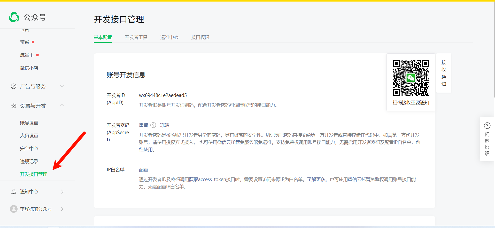
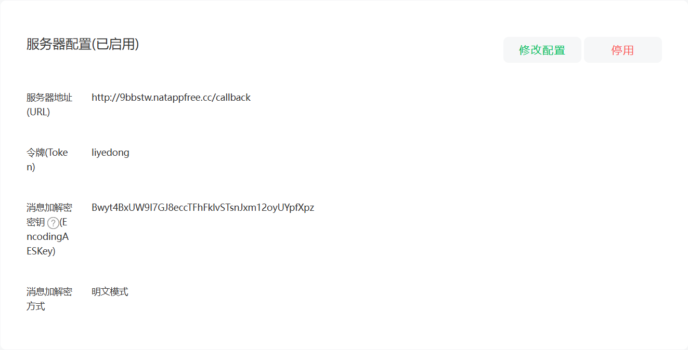
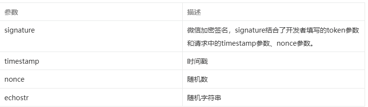
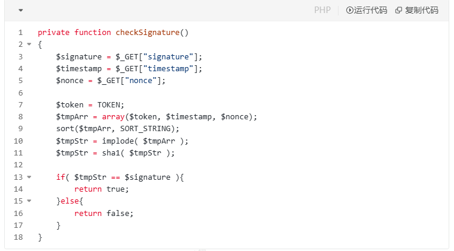
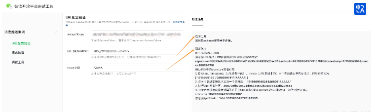

回调接入
配合视频食用
feat：微信初步引入
feat：微信回调消息
接入概述
接入微信公众平台开发，开发者需要按照如下步骤完成：
https://developers.weixin.qq.com/doc/subscription/guide/dev/push/
1、填写服务器配置
2、验证服务器地址的有效性
3、依据接口文档实现业务逻辑
下面详细介绍这3个步骤。（如你已有小程序，并且已开通小程序云开发，也可以使用 公众号环境共享 能力，在公众号中使用云开发。）
第一步：填写服务器配置
登录微信公众平台官网后，在公众平台官网的开发-基本设置页面，勾选协议成为开发者，点击“修改配置”按钮，填写服务器地址（URL）、Token和EncodingAESKey，其中URL是开发者用来接收微信消息和事件的接口URL。Token可由开发者可以任意填写，用作生成签名（该Token会和接口URL中包含的Token进行比对，从而验证安全性）。EncodingAESKey由开发者手动填写或随机生成，将用作消息体加解密密钥。
同时，开发者可选择消息加解密方式：明文模式、兼容模式和安全模式。模式的选择与服务器配置在提交后都会立即生效，请开发者谨慎填写及选择。加解密方式的默认状态为明文模式，选择兼容模式和安全模式需要提前配置好相关加解密代码，详情请参考消息体签名及加解密部分的文档 。


第二步：验证消息的确来自微信服务器
开发者提交信息后，微信服务器将发送GET请求到填写的服务器地址URL上，GET请求携带参数如下表所示：

开发者通过检验signature对请求进行校验（下面有校验方式）。若确认此次GET请求来自微信服务器，请原样返回echostr参数内容，则接入生效，成为开发者成功，否则接入失败。加密/校验流程如下：
1）将token、timestamp、nonce三个参数进行字典序排序
2）将三个参数字符串拼接成一个字符串进行sha1加密
3）开发者获得加密后的字符串可与signature对比，标识该请求来源于微信
检验signature的PHP示例代码：

PHP示例代码下载：下载 为了便于开发者调试，我们提供了URL验证工具供开发者使用。

开发者需填写AccessToken、URL地址、Token，点击“检查参数并发起验证”后，调试工具会发送GET请求到URL所指的服务器，并返回相关调试信息。
第三步：依据接口文档实现业务逻辑
验证URL有效性成功后即接入生效，成为开发者。你可以在公众平台网站中申请微信认证，认证成功后，将获得更多接口权限，满足更多业务需求。
成为开发者后，用户每次向公众号发送消息、或者产生自定义菜单、或产生微信支付订单等情况时，开发者填写的服务器配置URL将得到微信服务器推送过来的消息和事件，开发者可以依据自身业务逻辑进行响应，如回复消息。
公众号调用各接口时，一般会获得正确的结果，具体结果可见对应接口的说明。返回错误时，可根据返回码来查询错误原因。全局返回码说明
用户向公众号发送消息时，公众号方收到的消息发送者是一个OpenID，是使用用户微信号加密后的结果，每个用户对每个公众号有一个唯一的OpenID。
此外，由于开发者经常有需在多个平台（移动应用、网站、公众账号）之间共通用户账号，统一账号体系的需求，微信开放平台（open.weixin.qq.com）提供了UnionID机制。开发者可通过OpenID来获取用户基本信息，而如果开发者拥有多个应用（移动应用、网站应用和公众账号，公众账号只有在被绑定到微信开放平台账号下后，才会获取UnionID），可通过获取用户基本信息中的UnionID来区分用户的唯一性，因为只要是同一个微信开放平台账号下的移动应用、网站应用和公众账号，用户的UnionID是唯一的。换句话说，同一用户，对同一个微信开放平台账号下的不同应用，UnionID是相同的。详情请在微信开放平台的资源中心-移动应用开发-微信登录-授权关系接口调用指引-获取用户个人信息（UnionID机制）中查看。
另请注意，微信公众号接口必须以http://或https://开头，分别支持80端口和443端口。
Golang实现
| Java |
|---|
| package util
import (
"crypto/sha1"
"encoding/hex"
"sort"
"strings"
)
// CheckSignature 微信公众号签名检查
func CheckSignature(signature, timestamp, nonce, token string) bool {
arr := []string{timestamp, nonce, token}
// 字典序排序
sort.Strings(arr)
n := len(timestamp) + len(nonce) + len(token)
var b strings.Builder
b.Grow(n)
for i := 0; i < len(arr); i++ {
b.WriteString(arr[i])
}
return Sha1(b.String()) == signature
}
// 进行Sha1编码
func Sha1(str string) string {
h := sha1.New()
h.Write([]byte(str))
return hex.EncodeToString(h.Sum(nil))
}
|
| Java |
|---|
| package main
import (
"encoding/xml"
"fmt"
"log"
"time"
"github.com/gin-gonic/gin"
"weixin-demo-golang/util"
)
const Token = "liyedong"
func main() {
router := gin.Default()
router.GET("/wx", WXCheckSignature)
router.POST("/wx", WXMsgReceive)
log.Fatalln(router.Run(":80"))
}
// WXCheckSignature 微信接入校验
func WXCheckSignature(c *gin.Context) {
signature := c.Query("signature")
timestamp := c.Query("timestamp")
nonce := c.Query("nonce")
echostr := c.Query("echostr")
ok := util.CheckSignature(signature, timestamp, nonce, Token)
if !ok {
log.Println("[微信接入] - 微信公众号接入校验失败!")
return
}
log.Println("[微信接入] - 微信公众号接入校验成功!")
_, _ = c.Writer.WriteString(echostr)
}
// WXTextMsg 微信文本消息结构体
type WXTextMsg struct {
ToUserName string
FromUserName string
CreateTime int64
MsgType string
Content string
MsgId int64
}
// WXMsgReceive 微信消息接收
func WXMsgReceive(c *gin.Context) {
var textMsg WXTextMsg
err := c.ShouldBindXML(&textMsg)
if err != nil {
log.Printf("[消息接收] - XML数据包解析失败: %v\n", err)
return
}
log.Printf("[消息接收] - 收到消息, 消息类型为: %s, 消息内容为: %s\n", textMsg.MsgType, textMsg.Content)
WXMsgReply(c, textMsg.ToUserName, textMsg.FromUserName)
}
// WXRepTextMsg 微信回复文本消息结构体
type WXRepTextMsg struct {
ToUserName string
FromUserName string
CreateTime int64
MsgType string
Content string
// 若不标记XMLName, 则解析后的xml名为该结构体的名称
XMLName xml.Name `xml:"xml"`
}
// WXMsgReply 微信消息回复
func WXMsgReply(c *gin.Context, fromUser, toUser string) {
repTextMsg := WXRepTextMsg{
ToUserName: toUser,
FromUserName: fromUser,
CreateTime: time.Now().Unix(),
MsgType: "text",
Content: fmt.Sprintf("[消息回复] - %s", time.Now().Format("2006-01-02 15:04:05")),
}
msg, err := xml.Marshal(&repTextMsg)
if err != nil {
log.Printf("[消息回复] - 将对象进行XML编码出错: %v\n", err)
return
}
_, _ = c.Writer.Write(msg)
}
|
Java实现
| Java |
|---|
| package com.jingdianjichi.wx.controller;
import com.jingdianjichi.wx.utils.MessageUtil;
import com.jingdianjichi.wx.utils.SHA1;
import lombok.RequiredArgsConstructor;
import lombok.extern.slf4j.Slf4j;
import org.springframework.web.bind.annotation.*;
import java.util.Map;
@RestController
@Slf4j
public class CallBackController {
private static final String token = "adwidhaidwoaid";
@RequestMapping("/test")
public String test() {
return "hello world";
}
/**
* 回调消息校验
*/
@GetMapping("callback")
public String callback(@RequestParam("signature") String signature,
@RequestParam("timestamp") String timestamp,
@RequestParam("nonce") String nonce,
@RequestParam("echostr") String echostr) {
log.info("get验签请求参数：signature:{}，timestamp:{}，nonce:{}，echostr:{}",
signature, timestamp, nonce, echostr);
String shaStr = SHA1.getSHA1(token, timestamp, nonce, "");
if (signature.equals(shaStr)) {
return echostr;
}
return "unknown";
}
@PostMapping(value = "callback", produces = "application/xml;charset=UTF-8")
public String callback(
@RequestBody String requestBody,
@RequestParam("signature") String signature,
@RequestParam("timestamp") String timestamp,
@RequestParam("nonce") String nonce,
@RequestParam(value = "msg_signature", required = false) String msgSignature) {
log.info("接收到微信消息：requestBody：{}", requestBody);
Map<String, String> messageMap = MessageUtil.parseXml(requestBody);
String fromUserName = messageMap.get("FromUserName");
String toUserName = messageMap.get("ToUserName");
String content = "<xml>\n" +
" <ToUserName><![CDATA["+fromUserName+"]]></ToUserName>\n" +
" <FromUserName><![CDATA["+toUserName+"]]></FromUserName>\n" +
" <CreateTime>12345678</CreateTime>\n" +
" <MsgType><![CDATA[text]]></MsgType>\n" +
" <Content><![CDATA[我叫经典鸡翅]]></Content>\n" +
"</xml>";
return content;
}
}
|
messageUtil
| Java |
|---|
| package com.jingdianjichi.wx.utils;
import org.dom4j.Document;
import org.dom4j.Element;
import org.dom4j.io.SAXReader;
import java.io.ByteArrayInputStream;
import java.io.InputStream;
import java.nio.charset.StandardCharsets;
import java.util.HashMap;
import java.util.List;
import java.util.Map;
public class MessageUtil {
/**
* 解析微信发来的请求（XML）.
*
* @param msg 消息
* @return map
*/
public static Map<String, String> parseXml(final String msg) {
// 将解析结果存储在HashMap中
Map<String, String> map = new HashMap<String, String>();
// 从request中取得输入流
try (InputStream inputStream = new ByteArrayInputStream(msg.getBytes(StandardCharsets.UTF_8.name()))) {
// 读取输入流
SAXReader reader = new SAXReader();
Document document = reader.read(inputStream);
// 得到xml根元素
Element root = document.getRootElement();
// 得到根元素的所有子节点
List<Element> elementList = root.elements();
// 遍历所有子节点
for (Element e : elementList) {
map.put(e.getName(), e.getText());
}
} catch (Exception e) {
e.printStackTrace();
}
return map;
}
}
|
sha1 摘要工具
| Java |
|---|
| package com.jingdianjichi.wx.utils;
import lombok.extern.slf4j.Slf4j;
import java.security.MessageDigest;
import java.util.Arrays;
/**
* sha1生成签名工具
*
* @author: ChickenWing
* @date: 2023/11/5
*/
@Slf4j
public class SHA1 {
/**
* 用SHA1算法生成安全签名
*
* @param token 票据
* @param timestamp 时间戳
* @param nonce 随机字符串
* @param encrypt 密文
* @return 安全签名
*/
public static String getSHA1(String token, String timestamp, String nonce, String encrypt) {
try {
String[] array = new String[]{token, timestamp, nonce, encrypt};
StringBuffer sb = new StringBuffer();
// 字符串排序
Arrays.sort(array);
for (int i = 0; i < 4; i++) {
sb.append(array[i]);
}
String str = sb.toString();
// SHA1签名生成
MessageDigest md = MessageDigest.getInstance("SHA-1");
md.update(str.getBytes());
byte[] digest = md.digest();
StringBuffer hexStr = new StringBuffer();
String shaHex = "";
for (int i = 0; i < digest.length; i++) {
shaHex = Integer.toHexString(digest[i] & 0xFF);
if (shaHex.length() < 2) {
hexStr.append(0);
}
hexStr.append(shaHex);
}
return hexStr.toString();
} catch (Exception e) {
log.error("sha加密生成签名失败:", e);
return null;
}
}
}
|